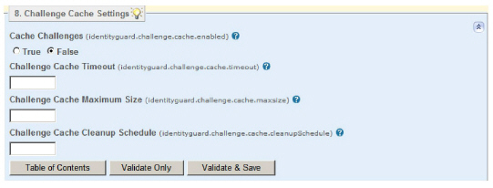

|
IdentityGuard Server 12.0 Administration Guide |
|
IdentityGuard Server 12.0 Administration Guide |
Entrust IdentityGuard uses a persistent repository to store challenges between the time your application issues the getGenericChallenge request and the authenticateGenericChallenge request. After you enable caching, you can set the size of this cache, how long the cached data stays in memory before it is written to the user repository, and how often the cache is checked. Caching challenges in memory may improve system performance.
Attention: Do not enable challenge caching in a replicated or load-balanced environment where you cannot guarantee that a user's authentication requests will always be directed to the same Entrust IdentityGuard server.
To enable cached challenges
1. Start the Entrust IdentityGuard Properties Editor. (See Log in or out of the Properties Editor.)
2. On the Table of Contents, click Challenge Cache Settings.
3. To enable the caching of challenges, select True under Cache Challenges.
4. Optional. Set Challenge Cache Timeout. It defines how long (in seconds) a challenge remains in the cache before it is written to the repository. The default is 180 (3 minutes):
5. (Optional) Set Challenge Cache Maximum Size. It controls the maximum size (in number of challenges) held in the challenge cache, after which the least used entry is written to the repository. If this is not set or it has an invalid value, the cache size defaults to infinite.
6. (Optional) Set Challenge Cache Cleanup Schedule. It sets the number of milliseconds between checks to see if challenges should be written to the repository. The default is 60000 (60 seconds).
